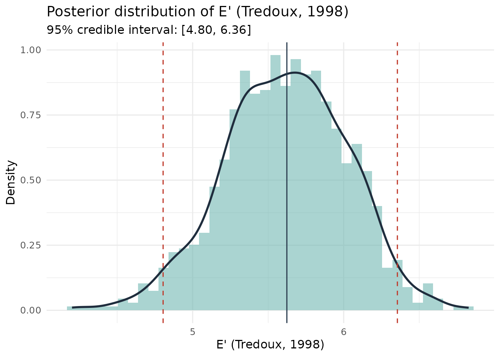
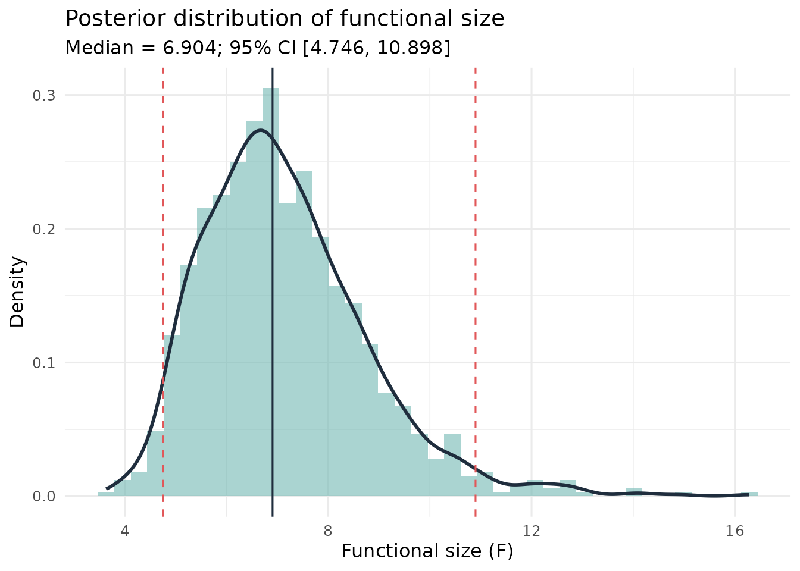
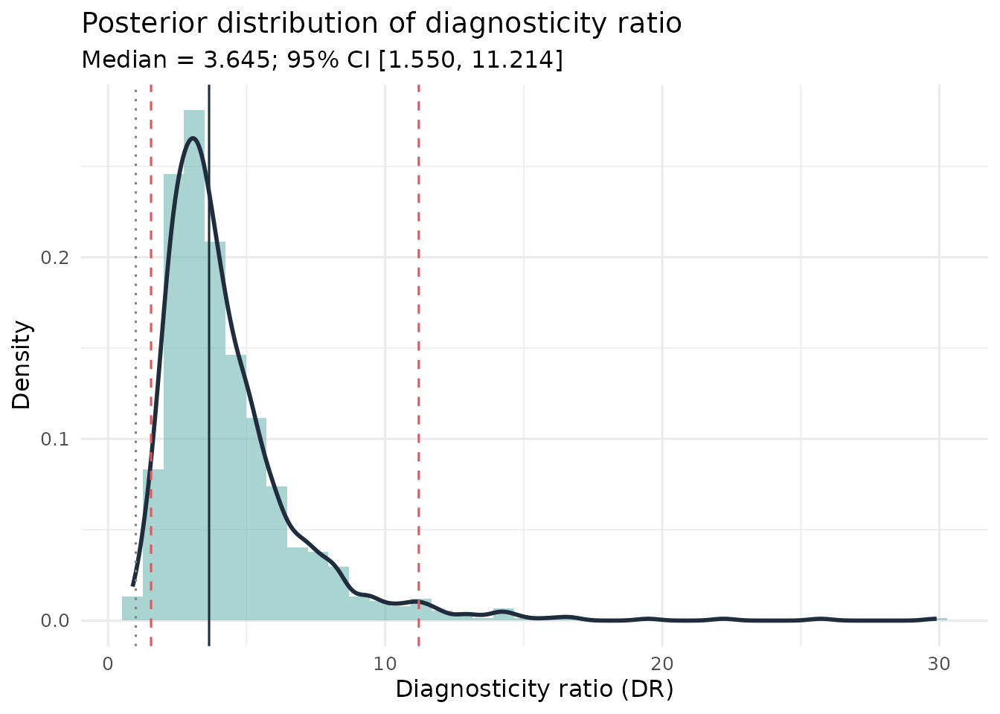
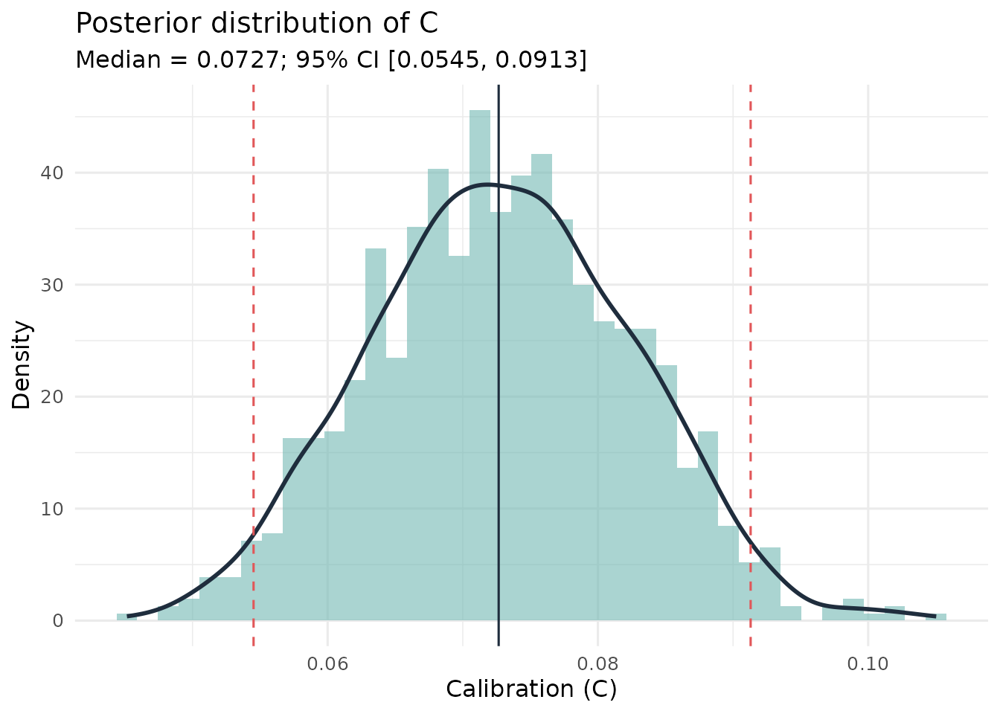
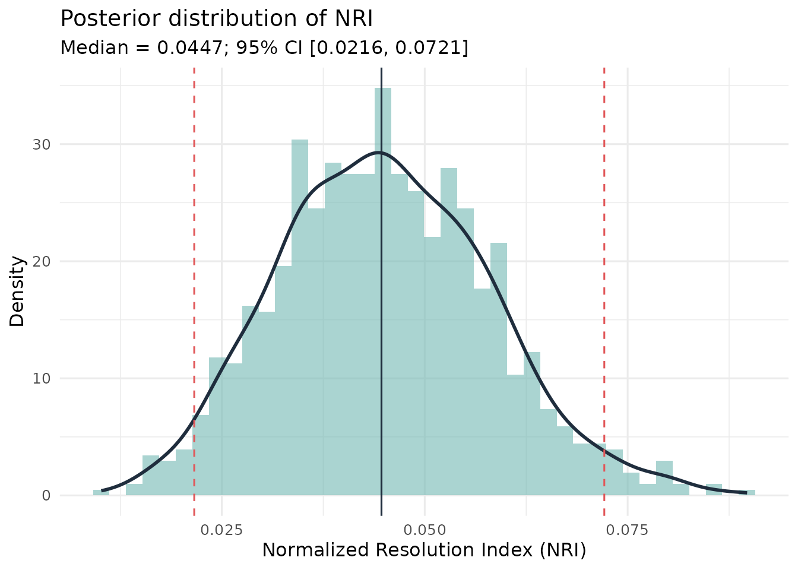
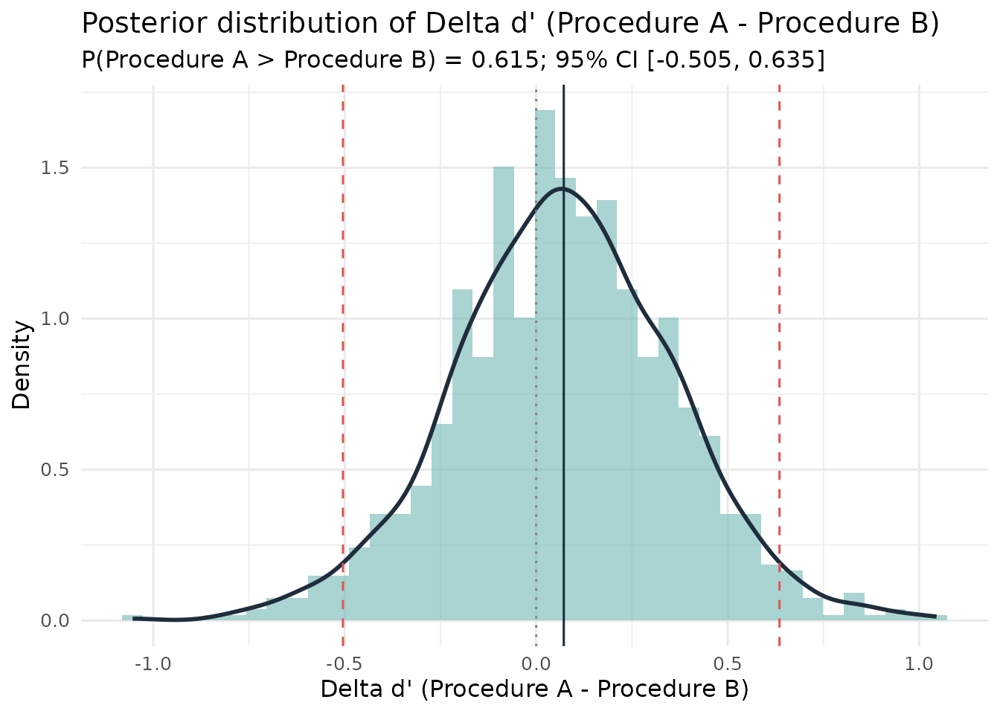

Bayesian Inference for Lineup Measures
Colin G. Tredoux
Tamsyn M. Naylor
2026-10-30
Source:vignettes/bayesian_inference.Rmd
bayesian_inference.RmdAcknowledgement. Large language models supplied by Anthropic and OpenAI were used in preparing this vignette, to assist with checking code, testing the veracity of the approaches described, and on occasion editing the text. Responsibility for the content rests with the authors.
Purpose
This vignette shows the Bayesian posterior summaries in r4lineups for lineup fairness and confidence-based eyewitness measures.
Use these functions when you want credible intervals or direct
probability statements such as
,
,
or
.
The examples use small posterior samples so that the vignette runs
quickly during package checks; increase S for final
analyses.
If you have only used frequentist methods
Most readers of this package will have been trained in the frequentist tradition, so it is worth setting out plainly what is different here. Nothing in what follows requires accepting a philosophical position; it is mainly about what question the interval answers.
The question you probably want to ask. Having measured a six-person lineup and obtained an effective size of 4.8, the natural question is: what is the probability that this lineup’s effective size is below 6? A frequentist confidence interval cannot answer that. It is a statement about the procedure — that intervals constructed this way contain the true value 95% of the time — not about this lineup. The true effective size either is or is not below 6, and frequentist probability does not attach to it.
A Bayesian credible interval does answer it. “There is a 95% probability that E′ lies between 4.1 and 5.6, given these data” is a statement about the quantity, and it is the statement most people believe they are making when they report a confidence interval.
How that is achieved. By treating the unknown quantity as having a distribution. Three steps:
- A prior describes what is believed before seeing
the data. Here the priors are deliberately weak —
alpha = 0.5is the Jeffreys prior for proportions, which is close to saying “no lineup member is favoured, and I am not confident about that either”. - The data update it through the likelihood.
- The result is the posterior, a full distribution for the quantity, from which any summary can be read: a median, an interval, or a direct probability such as .
Why the functions return draws rather than formulas.
Effective size is
— a nonlinear function of the choice probabilities. There is no tidy
closed form for its posterior. Instead the functions sample
S draws from the posterior of the probabilities and
transform each draw. The resulting collection of S values
is the posterior of E′, and any summary is computed from it.
This is why S matters: too few draws and the summaries are
noisy. Note that these are independent Monte Carlo draws, not MCMC, so
there is no chain to check for convergence.
What you gain in practice, beyond the interpretation:
- Bounded quantities behave properly. E′ cannot exceed lineup size and a proportion cannot be negative. Normal-theory intervals can and do run outside those bounds at small samples; a posterior on the natural scale cannot.
- Direct probabilities. is often exactly what a report needs, and is awkward to extract from a p-value.
- Small samples degrade gracefully. With few mock witnesses the posterior becomes wide, which is the honest result, rather than producing a narrow interval resting on an asymptotic approximation that does not hold.
What it does not give you. It is not a way of getting a decisive answer from thin data. A weak prior and a small sample give a wide posterior, and that width is the finding.
Data Shapes
The Bayesian fairness functions use mock-witness lineup choices:
- a lineup vector, where each value is the chosen lineup position; or
- a lineup table, where each cell is the count for one lineup position.
The Bayesian calibration function uses the standard confidence-based
data frame with target_present,
identification, and confidence. The SDT
comparison uses summary counts: hits, misses, false alarms, and correct
rejections for two conditions.
Effective Size
esize_T_bayes() fits a Dirichlet-multinomial model to
the lineup choice counts and transforms each posterior draw of the
choice-probability vector to Tredoux’s effective size
.
data(nortje2012)
lineup_vec <- nortje2012$lineup_1
k <- max(lineup_vec, na.rm = TRUE)
lineup_tab <- table(factor(lineup_vec, levels = seq_len(k)))
set.seed(1)
esize_post <- esize_T_bayes(
lineup_tab,
alpha = 0.5,
S = 1000,
threshold = k
)
esize_post
#> Bayesian Posterior: Effective Size E' (Tredoux, 1998)
#> ------------------------------------------------
#> k (positions): 8 N (choices): 133 S (draws): 1000
#> Prior: Dirichlet(alpha = 0.50)
#> Posterior mean: 5.614
#> Posterior median: 5.624
#> 95% credible interval: [4.804, 6.355]
#> P(E' < 8.00 | data): 1.000
#> P(E' > 8.00 | data): 0.000
plot(esize_post)
The threshold argument makes the posterior useful for fairness benchmarks. For example, with a six-person lineup one might inspect as a posterior probability that the effective size falls below nominal size.
Functional Size
func_size_bayes() models the suspect-selection rate with
a beta-binomial posterior and transforms posterior draws to functional
size.
set.seed(2)
func_post <- func_size_bayes(
lineup_vec,
target_pos = 3,
alpha = 0.5,
S = 1000,
threshold = k
)
func_post
#> Bayesian Functional Size - Beta-Binomial model
#> Prior: Jeffreys-type Beta(0.50, 0.50)
#> n = 133, suspect IDs = 19 (rate = 0.143)
#> Posterior mean F: 7.189
#> Posterior median F: 6.904
#> 95% credible interval: [4.746, 10.898]
#> P(F < 8.000 | data): 0.7480
#> P(F > 8.000 | data): 0.2520
plot(func_post)
Diagnosticity Ratio
diag_ratio_T_bayes() models target-present and
target-absent suspect-selection rates with independent beta-binomial
posteriors and returns the posterior of the diagnosticity ratio.
tp_vec <- nortje2012$lineup_1
ta_vec <- nortje2012$lineup_2
set.seed(3)
diag_post <- diag_ratio_T_bayes(
lineup_pres = tp_vec,
lineup_abs = ta_vec,
pos_pres = 3,
pos_abs = 3,
k1 = max(tp_vec, na.rm = TRUE),
k2 = max(ta_vec, na.rm = TRUE),
alpha = 0.5,
S = 1000,
threshold = 1
)
diag_post
#> Bayesian Diagnosticity Ratio (Tredoux) - Beta-Binomial model
#> Prior: Jeffreys-type Beta(0.50, 0.50)
#> TP lineup: n = 133, suspect IDs = 19
#> TA lineup: n = 133, suspect IDs = 5
#> Posterior mean DR: 4.301
#> Posterior median DR: 3.645
#> 95% credible interval: [1.550, 11.214]
#> P(DR < 1.000 | data): 0.0010
#> P(DR > 1.000 | data): 0.9990
plot(diag_post)
The threshold 1 is useful because
indicates that suspect identifications are more common in the
target-present lineup than in the target-absent lineup.
Calibration
calibration_bayes() places beta posteriors on accuracy
within confidence bins and propagates uncertainty into calibration
,
over/underconfidence
,
and normalized resolution
.
data(lineup_example)
set.seed(4)
cal_post <- calibration_bayes(
lineup_example,
confidence_bins = c(0, 60, 80, 100),
alpha = 0.5,
S = 1000
)
cal_post
#> Bayesian Calibration Analysis - Beta-Binomial model
#> n = 503; 3 confidence bins; prior alpha = 0.50
#> C (calibration): mean = 0.0729, median = 0.0727, 95% CI [0.0545, 0.0913]
#> O/U (over/underconf): mean = -0.2268, median = -0.2266, 95% CI [-0.2564, -0.1931]
#> NRI (resolution): mean = 0.0450, median = 0.0447, 95% CI [0.0216, 0.0721]
#> (Frequentist: C = 0.0727, O/U = -0.2290, NRI = 0.0453)
plot(cal_post, metric = "C")
plot(cal_post, metric = "NRI")
SDT d’ Comparison
sdt_compare() compares two conditions using summary SDT
counts. It draws from posterior hit and false-alarm rates, converts each
draw to
,
and reports the posterior for
.
set.seed(5)
sdt_post <- sdt_compare(
hits_A = 45, misses_A = 55, fas_A = 12, crs_A = 88,
hits_B = 38, misses_B = 62, fas_B = 10, crs_B = 90,
label_A = "Procedure A",
label_B = "Procedure B",
alpha = 0.5,
S = 1000
)
sdt_post
#> Bayesian SDT Comparison: Procedure A vs Procedure B
#> Prior: Jeffreys Beta(0.50, 0.50) on HR and FAR
#> Posterior mean d': Procedure A = 1.042, Procedure B = 0.971
#> Delta d' (Procedure A - Procedure B):
#> Posterior mean: 0.072
#> Posterior median: 0.072
#> 95% CI: [-0.505, 0.635]
#> P(d'_Procedure A > d'_Procedure B | data): 0.6150
#> P(d'_Procedure B > d'_Procedure A | data): 0.3850
#> (Frequentist z-test: z = 0.254, p = 0.7994)
plot(sdt_post)
Workflow Position
These Bayesian functions complement, rather than replace, the frequentist and bootstrap functions elsewhere in the package:
- use normal-theory functions for quick classical intervals where assumptions are acceptable;
- use bootstrap functions when you want sampling-distribution uncertainty with minimal distributional assumptions;
- use Bayesian functions when credible intervals and direct posterior probabilities are the clearest way to express uncertainty.
For substantive reports, run enough posterior draws for stable
summaries and check sensitivity to the prior concentration, for example
alpha = 0.1, 0.5, and 1.
sensitivity <- do.call(rbind, lapply(c(0.1, 0.5, 1.0), function(a) {
set.seed(11)
post <- esize_T_bayes(lineup_tab, alpha = a, S = 2000, threshold = k)
data.frame(
`Prior alpha` = a,
`Posterior median` = round(post$posterior_median, 3),
`Lower` = round(post$credible_interval[["lower"]], 3),
`Upper` = round(post$credible_interval[["upper"]], 3),
check.names = FALSE
)
}))
knitr::kable(
sensitivity, row.names = FALSE,
caption = "Sensitivity of the E' posterior to prior concentration, nortje2012 lineup 1 (nominal size 8)."
)| Prior alpha | Posterior median | Lower | Upper |
|---|---|---|---|
| 0.1 | 5.530 | 4.702 | 6.255 |
| 0.5 | 5.622 | 4.785 | 6.346 |
| 1.0 | 5.706 | 4.861 | 6.485 |
If the three rows agree closely, as they generally will once there are a few dozen choices, the prior is doing little and the result is driven by the data. Disagreement is a signal that the sample is too small for the data to dominate, and should be reported rather than resolved by picking a prior.
Technical Details
What is being sampled
| Function | Model | Transformation applied to each draw |
|---|---|---|
esize_T_bayes() |
Dirichlet-multinomial on the k choice counts | |
func_size_bayes() |
Beta-binomial on suspect selections | |
diag_ratio_T_bayes() |
Independent beta-binomials for the two lineups | |
calibration_bayes() |
Beta posterior on accuracy within each confidence bin | C, O/U and NRI |
sdt_compare() |
Beta posteriors on hit and false-alarm rates |
In each case the posterior of the transformed quantity is obtained by transforming draws, not by approximating the transformation. This matters for quantities like , a ratio whose sampling distribution is markedly skewed: the posterior inherits that skew correctly, where a symmetric normal-theory interval would not.
The prior
alpha is the concentration parameter of the Dirichlet or
beta prior, applied symmetrically. alpha = 0.5 is the
Jeffreys prior, alpha = 1 is uniform, and smaller values
place more weight near the boundaries. All are weak; with more than a
few dozen observations the likelihood dominates, which the sensitivity
check above is there to confirm.
Monte Carlo error
Summaries are computed from S independent draws, so they
carry Monte Carlo error of order
.
These are not Markov chains, so autocorrelation and convergence
diagnostics do not apply. S = 1000 is adequate for a
median, but tail probabilities and interval endpoints need more — use
10,000 or more where a reported number depends on them.
Assumptions
- Choices are independent across witnesses, and each witness contributes one.
- The Dirichlet-multinomial treats members as exchangeable a priori. That is a statement about prior ignorance, not a claim that foils are interchangeable in fact; the data are what distinguish them.
-
diag_ratio_T_bayes()treats the two lineups as independent samples. -
sdt_compare()assumes equal-variance signal detection, as the classical does.
References
Agresti, A., & Agresti, B. F. (1978). Statistical analysis of qualitative variation. Sociological Methodology, 9, 204-237.
Tredoux, C. G. (1998). Statistical inference on measures of lineup fairness. Law and Human Behavior, 22(2), 217-237.
Further Reading
-
?esize_T_bayes,?func_size_bayes,?diag_ratio_T_bayes,?calibration_bayes,?sdt_compare - The main vignette for the frequentist and bootstrap counterparts, and for the small-sample bias of the plug-in E′ estimator